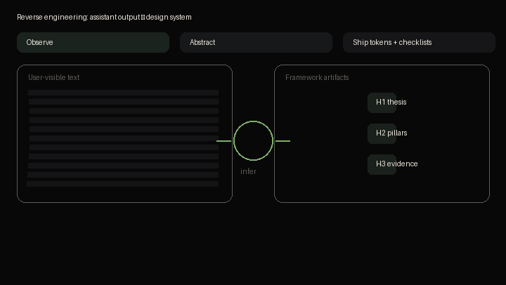

Community reverse engineering of observable patterns in strong long-form answers:
answer-first flow, chunking, tables, progressive disclosure — packaged as MIT-licensed docs and CSS
tokens (--cd-*).

scripts/render-framework-promo.py · no proprietary source included.Repository on GitHub — hosting and contribution steps are in the README.